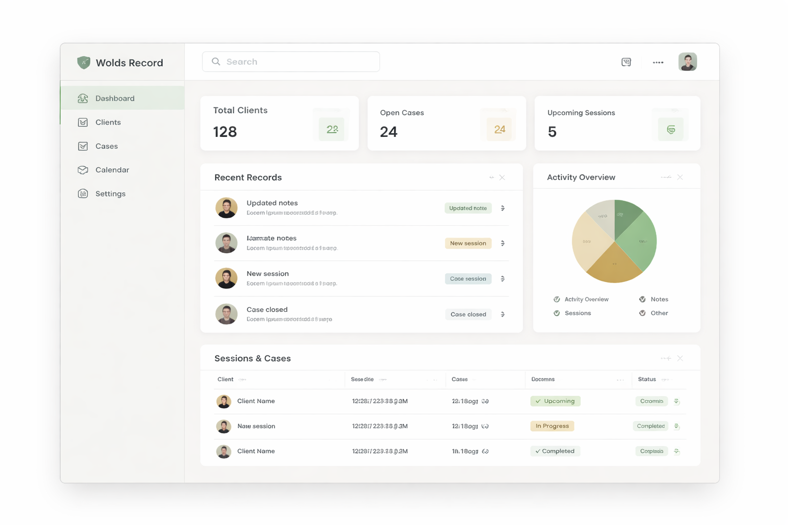
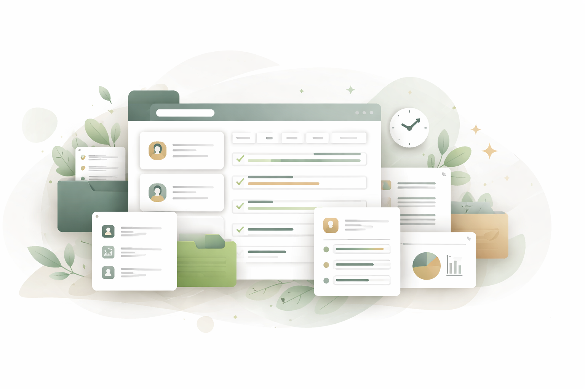

Clear client and case records
Store key details in a format that is easy to maintain and review.
Wolds Record
Sign InBuilt for practical professionals
Keep client records, sessions, and cases in one clear workflow. Wolds Record helps you stay organised and save time without introducing unnecessary complexity.
Sign up and start working from any modern browser.

Better records, less friction
Wolds Record gives you one place to manage case details, session notes, history, and follow-up admin. The workflow is intentionally straightforward so you can work confidently and stay on top of daily tasks.

Store key details in a format that is easy to maintain and review.
Capture each session and quickly reference past entries when context matters.
Create clear vet reports and capture both customer and vet consent in one structured flow.
Join for free and start managing cases without pricing complexity.
Secure, web-based access across devices so you can work where you need to.
Use practical guides and help articles to get answers quickly.
Designed for focused teams
Move from intake to review with a clear structure that keeps your records complete and easy to audit, while reducing context switching throughout the day.
Wolds Record is currently in beta, with staged onboarding for early users.
It is built for solo practitioners and small businesses that need clear, professional case and session records.
Once your beta access is active, you can sign in at the app URL. Sign in at app.woldsrecord.com.
Guidance is available in the knowledge base. Placeholder: https://help.woldsrecord.com.